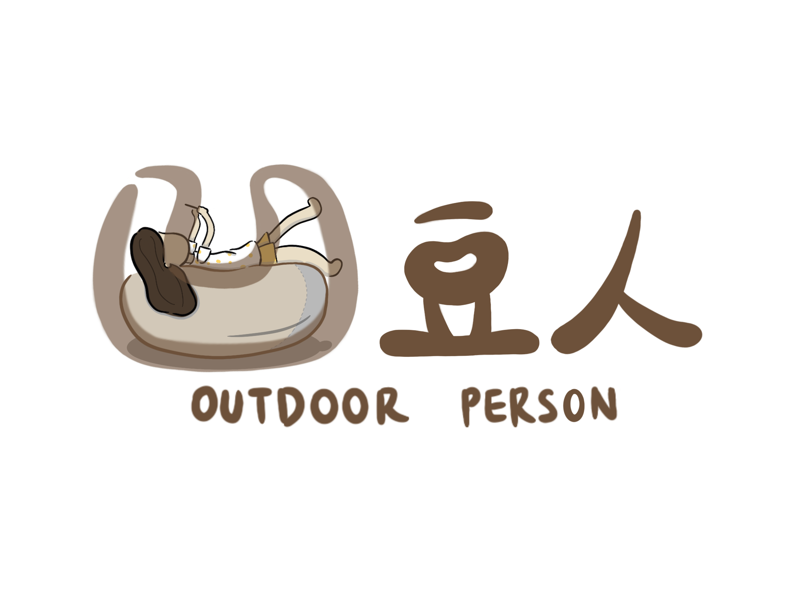

品牌故事

SINCE | 2020-2023
現代不管是學生或是上班族，每天都過著繁忙的生活 只要一到假日，總是因為平日的繁忙而讓自己的假日只能窩在家，而導致普遍的現代人運動量不足。 本團隊為了改變現代人因為事業及科技發展導致的文明病，幫助大家成立了許多戶外活動 從定點至遠程、從靜態到動態 為匆忙的生活按下暫停鍵，觸摸大自然、放鬆自己的身心靈 在忙碌的生活中突破自己的里程碑並對生活有了新的目標。 - 凹豆為英文的OUTDOOR 希望能同時呼籲大家 即便生活如此忙碌，停下腳步，到OUTDOOR走走吧！
品牌LOGO
SINCE | 2020-2023
人躺在沙發玩手機的型態就有如「凹」字一般。 並將「凹」與躺在沙發玩手機的人做結合 以詼諧的方式呈現 「嘿！別再讓自己凹在沙發，去OUTDOOR走走吧！」